BIENVENIDO
ven y conoce nuestros captus
Lo último de nuestro blog

Los captus necesitan cariño

Cuidalos son parte del planeta
Para muchos de nosotros los captus no son simples captus, son miembros del cbtis 222.
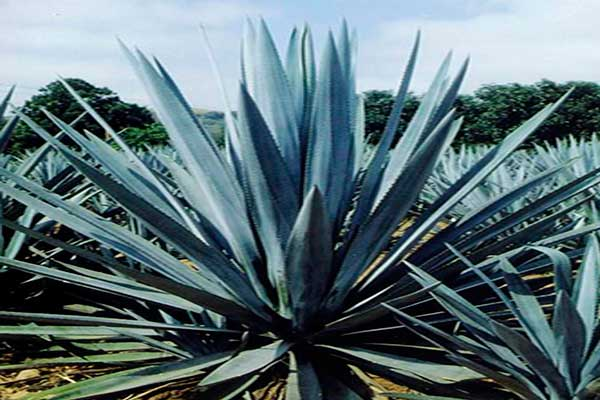
AGAVE
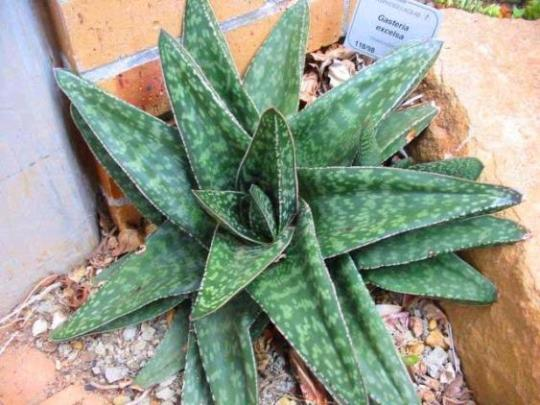
ALOE MACULATA
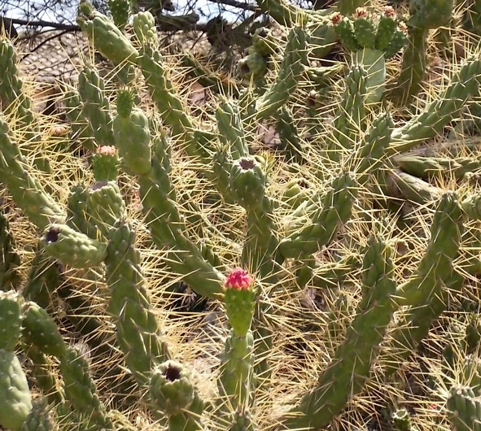
AUSTROCYLINDROPUNTIA SUBULATA
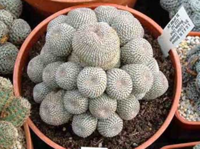
AYLOSTERA SPP
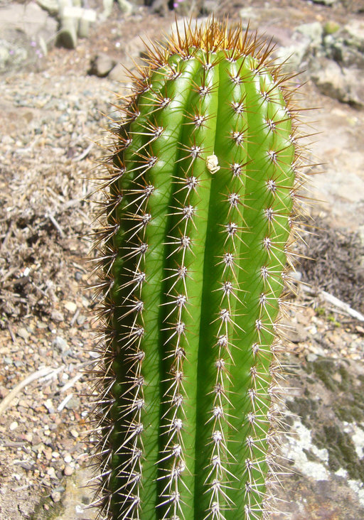
CLEISTOCACTUS TUPIZENSIS
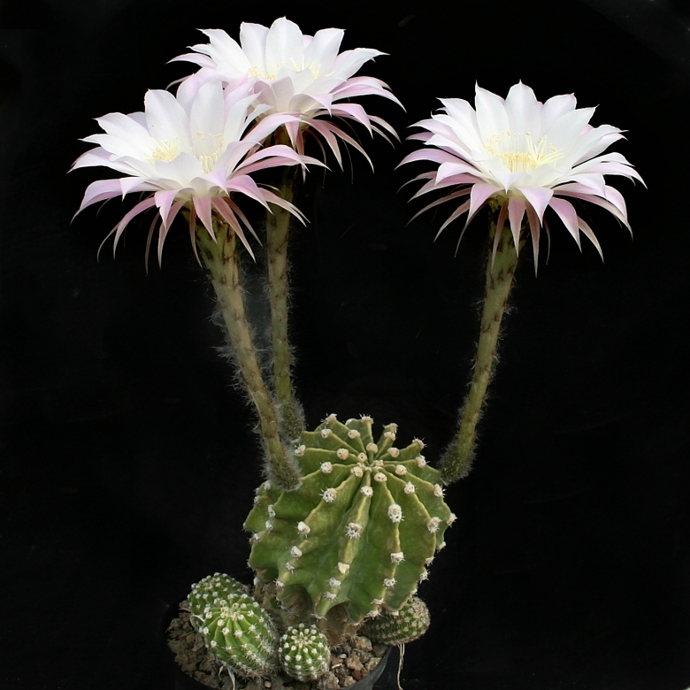
ECHINOPSIS EYRIESII
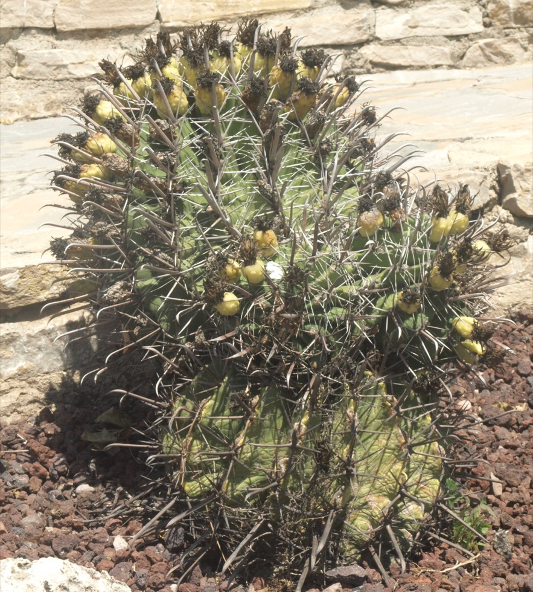
FEROCACTUS PENINSULAE
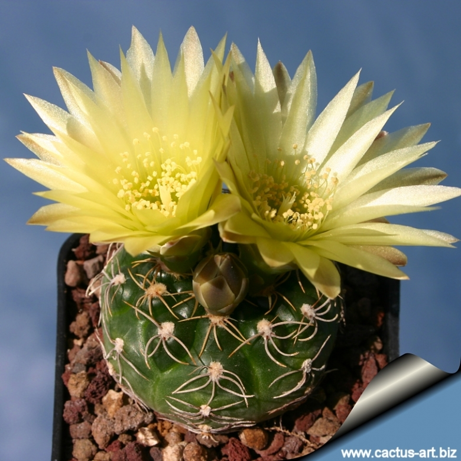
GYMNOCALYCIUM LEEANUM
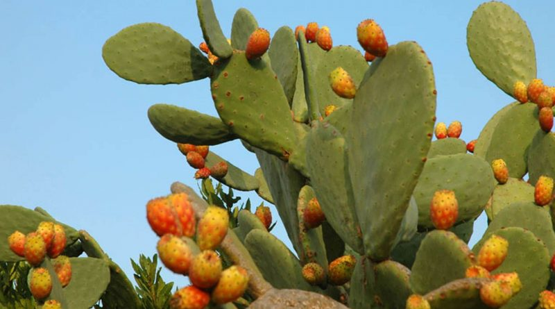
OPUNTIA FICUS-INDICA
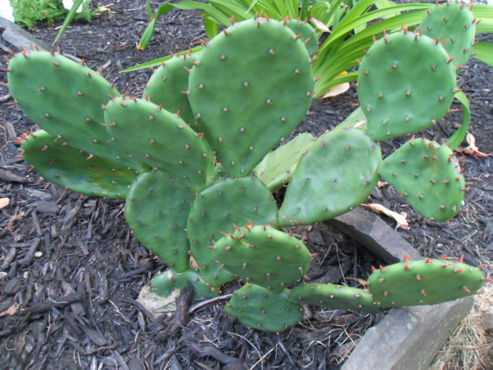
OPUNTIA HUMIFUSA
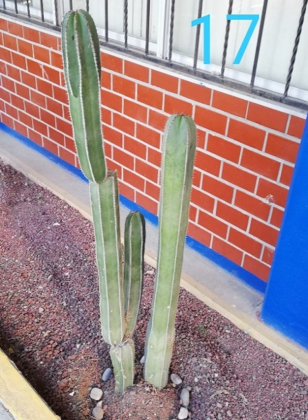
PACHYCEREUS MARGINATUS
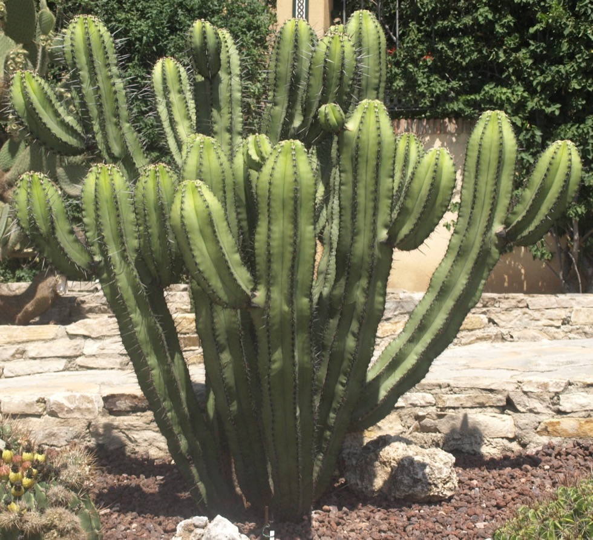